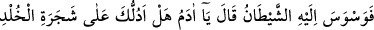
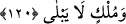
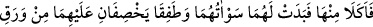
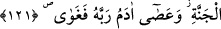
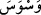
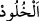

120. Derken şeytan onun aklını karıştırıp “Ey Adem! Sana ebedîlik ağacını ve
sonu gelmez bir saltanatı göstereyim mi?” dedi.
“Derken şeytan onun aklını karıştırıp;” yani Âdem’e vesvese verdi. “ gizli
ses demektir.
Kâşifî der ki: “Şeytan Âdem (a.s.)’ı cennetten çıkarmak için ona vesvese verdi.
Havvâ’yı gördü ve onu ölümden korkuttu. Havvâ da Âdem (a.s.)’a bunları söyledi, o da
ölümden korktu. İblis onlara yaşlı bir adam sûretinde zâhir oldu. Âdem (a.s.) ona
mürâcaat eyledi ve ondan ölümün çaresini taleb etti.”
Sanki “Şeytan vesvesesinde ne dedi?” diye sorulmuş ve cevab olarak şöyle
denilmiştir: “Ey Adem! Sana ebedîlik ağacını ve sonu gelmez bir saltanatı” zevâl
bulmayacak ve herhangi bir sebeple yıkılmayacak bir hükümranlığı “göstereyim mi?”
dedi.” O ağaç, öyle bir ağaç ki kim ondan yerse, ebedî olur ve asla ölmez. İster kendi
bulunduğu hâl üzere kalır ya da melek olur.
Şeytan onlara: “Ölüm hastalığının ilacı cennette olan ebedîlik ağacının meyvesinden
yemektir. Size onu ve eskimeyen bir mülkü göstereyim mi?” dedi. Âdem (a.s.): “Bize
onu göster.” dedi. İblis, Âdem ve Havva’yı o yasaklanan ağaca götürdü.
Burada “şecere (yani ağaç)”, ebedîliğe izâfe olunmuştur. Çünkü İblis’in zannına göre
o, ebedî olmanın sebebidir. Nitekim (Cebrâil (a.s.)’ın atı Hayzûm’a da “Hayat atı”
denilmiştir. Çünkü o, hayatın sebebi olarak görülmüştü.
Râğıb der ki: “, bir şeyin fesâda uğramaktan uzak olması ve bulunduğu hâl üzere
bakâsıdır. Cennetteki bakâ ise, eşyanın kevn ve fesâda uğramaksızın bulunduğu hâl
üzere kalmasıdır.
121. Nihayet ondan yediler. Bunun üzerine kendilerine ayıp yerleri göründü.
Üstlerini cennet yaprağı ile örtmeye çalıştılar. (Bu sûretle) Âdem Rabbine âsi olup
yolunu şaşırdı.
“Nihayet ondan yediler. Bunun üzerine kendilerine ayıp yerleri göründü.” Buradaki
“kötü yer” avret mahallinden kinâyedir. Çünkü insan, avret mahallinin açılmasıyla kötü
duruma düşer, üzülür.
Kâşifî der ki: “Yâni cennet elbiseleri onların üzerinden sıyrıldı ve çıplak kaldılar.”
İbn Abbas (r. anhümâ)’dan rivâyete göre onlardan daha önce Allâh’ın kendilerine